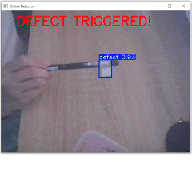
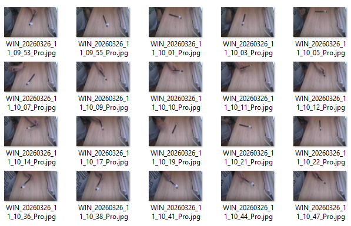
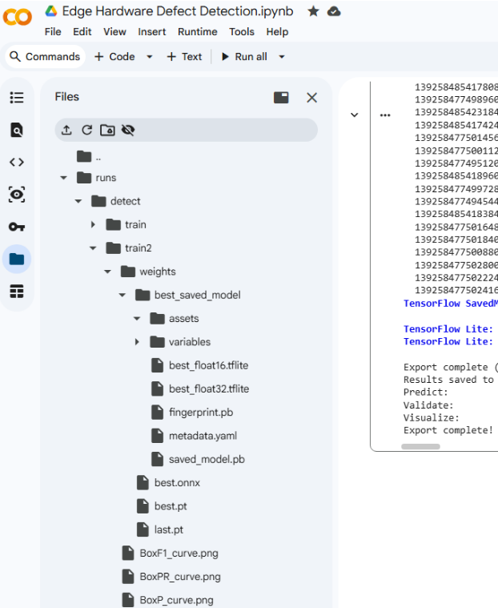
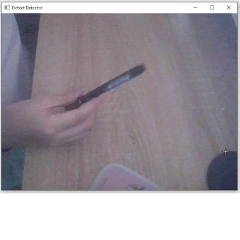

When you're building computer vision projects, it's easy to train a massive model that runs beautifully on a high-end GPU. But what happens when you need to deploy that model to the edge—say, a resource-constrained microcontroller or a Raspberry Pi?
Recently, I set out to tackle this exact problem. I wanted to build a practical, high-speed object detection model to identify manufacturing defects on ballpoint pens, and more importantly, I needed to optimize it so it could actually run in the real world.
Here is how I built, trained, and shrank a computer vision model from scratch.
You can’t train a highly specific model without highly specific data. I started by generating my own custom dataset to ensure the algorithm learned the exact features of the anomaly.
I took 100 localized photos: 50 of standard, normal ballpens, and 50 featuring the specific "defect." From there, I brought the images into Roboflow, manually drawing bounding boxes and annotating every single photo to establish the ground truth. I split the data into a standard 80% training and 20% validation set and exported it in the YOLOv8 format.

Training models locally is a great way to melt your laptop’s CPU. To keep my hardware safe and drastically speed up the process, I moved the pipeline to the cloud.
I spun up a Google Colab environment equipped with an NVIDIA T4 GPU. Instead of manually uploading files, I wrote a quick Python script to securely authenticate with the Roboflow API and pull the custom dataset directly into the cloud instance. It was a simple data ingestion step, but it made the workflow infinitely smoother.
I didn’t want to reinvent the wheel by building an AI architecture from scratch for such a small dataset. Instead, I used Transfer Learning.
I grabbed YOLOv8-nano—an incredibly lightweight, state-of-the-art object detection model that already understands basic shapes and edges. By passing my 100 images through it for 50 epochs, I forced the model to rewire its final layers to specifically hunt for my pen defect.
Of course, no project goes perfectly smoothly. During setup, the training pipeline threw an error because of a missing validation split configuration. Rather than tearing down the whole dataset, I dug into the .yaml file and manually bypassed the error—a classic, quick-fix engineering hack that kept the rapid prototyping phase moving.
This was the most critical part of the project. A raw PyTorch (.pt) model is far too heavy and slow for microcontrollers. If I wanted this to be viable for edge deployment, it needed to lose some weight.
I ran the model through a quantization process, compressing its mathematical precision into a Float16 TensorFlow Lite (.tflite) format. This resulted in defect_model.tflite—a drastically shrunken file size that significantly boosted the inference speed (Frames Per Second) without noticeably sacrificing detection accuracy.

To validate the build, I wrote a quick test script using OpenCV to feed images into the .tflite model. It worked perfectly, drawing tight bounding boxes around the defects in real-time.
This project was a great hands-on dive into the full machine learning pipeline—from manual data annotation to cloud computing, and ultimately, model optimization. It proved that with the right quantization, you can pack powerful computer vision capabilities into incredibly small packages.

Portfolio Assistant
Powered by Llama 3 · Online